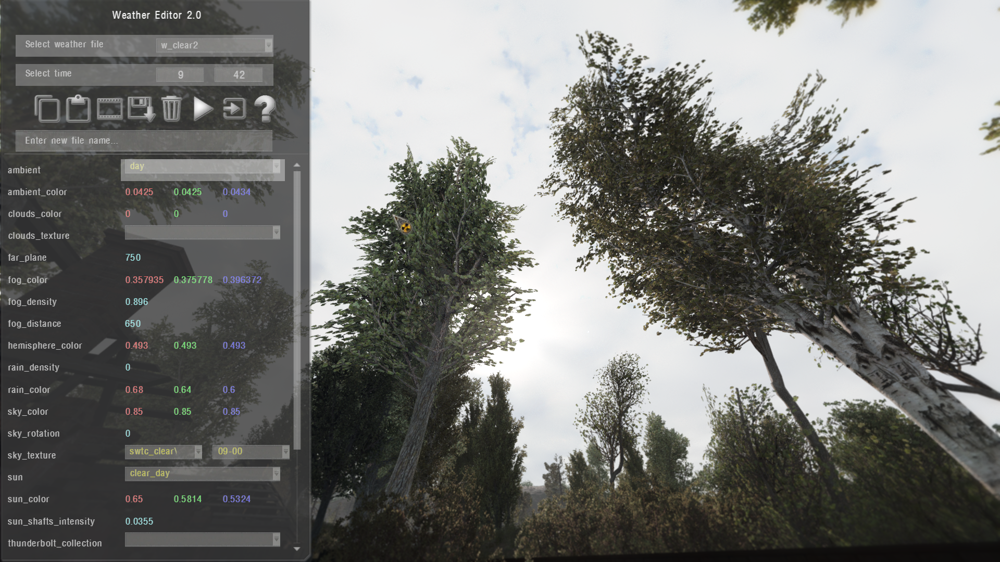
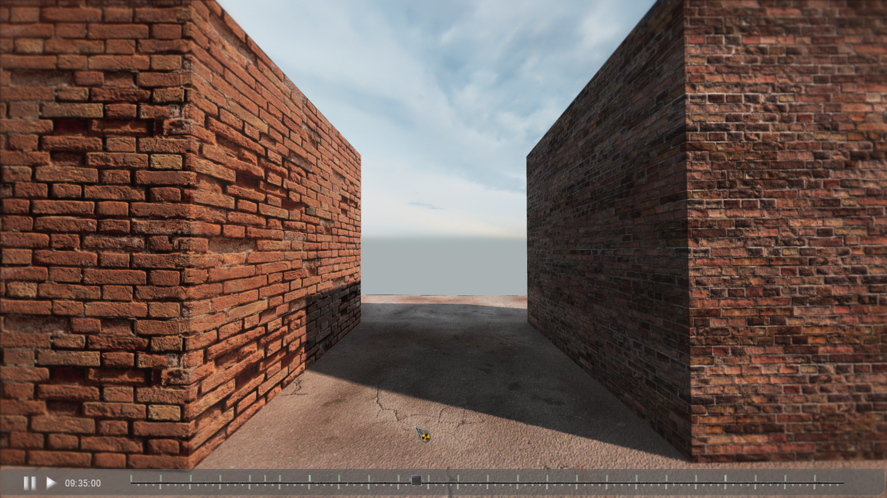

Weather Editor
About
Weather editor allows you to change weather values in real-time. Minute precision
- The GUI is interactive and easy to use, with ability to modify or create new weather files
- Edited values are temporary cached for the weathers, hours and minutes you worked on. You can return to them in case you turned off the editor (Avoid exiting or reloading when you have unsaved values)
- In Viewer mode, you can witness weather changes by the time slider

Viewer Mode

Key binds
Up Arrow- select previous parameterDown Arrow- select next parameterLeft Arrow- reduce\rotate value of selected parameterRight Arrow- increase\rotate value of selected parameterLShift (hold)- x10 value stepLAlt (hold)- x50 value stepQ- previous hourA- next hourW- previous minuteS- next minuteE- increase selected parameter valueD- reduce selected parameter valueR- increase selected group value (all parameters within)F- reduce selected group value (all parameters within)T- next momentG- previous momentC- copy select parameter valueC + CTRL- copy current moment settingsV- paste/apply copied parameter valueV + CTRL- paste/apply to current moment settingsZ- viewer modeDelete- Reset current modified momentDelete + CTRL- Reset all modified momentsH- toggle hint windowEscorHome- turn off editor
Buttons
| Icon | Description |
|---|---|
| Copy settings | |
| Paste settings | |
| Viewer Mode | |
| Pause in Viewer Mode | |
| Auto play in Viewer Mode | |
Save to new file if you indicated the name in box below, otherwise save to current file. Name of custom files must start with “w_”. | |
| Clear cached values | |
| Resume weather, and exit | |
| Exit (weather will still paused in engine) | |
| About |
Technical part
The settings of the editor and its parameters can be found in the file “ui_debug_weather.script”
| Name | Description | Note |
|---|---|---|
| ambient | Ambient | The list is taken from the file “ambients.ltx” |
| ambient_color | Ambient color | |
| clouds_color | Clouds color | |
| clouds_texture | Clouds texture | |
| far_plane | ||
| fog_color | Fog color | |
| fog_density | Fog density | |
| fog_distance | Fog distance | |
| hemisphere_color | Hemisphere color | |
| rain_density | Rain density | |
| rain_color | Rain color | |
| sky_color | Sky color | |
| sky_rotation | Sky rotation | |
| sky_texture | Sky texture | |
| sun | Sun | The list is taken from the file “suns.ltx” |
| sun_color | ||
| sun_longitude | Sun longitude | |
| sun_altitude | Sun altitude | |
| sun_shafts_intensity | Sun shaft intensity | |
| thunderbolt_collection | The list is taken from the file “thunderbolt_collections.ltx” | |
| thunderbolt_duration | Thunderbolt duration | |
| thunderbolt_period | Thunderbolt period | |
| water_intensity | Water intensity | |
| wind_velocity | Wind velocity | |
| tree_amplitude_intensity | Tree amplitude intensity | |
| wind_direction | Wind direction |